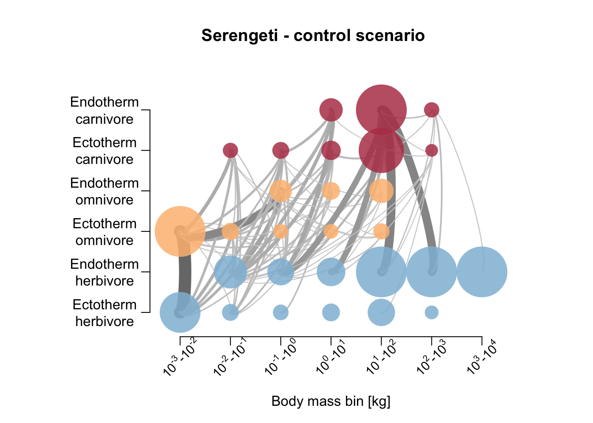
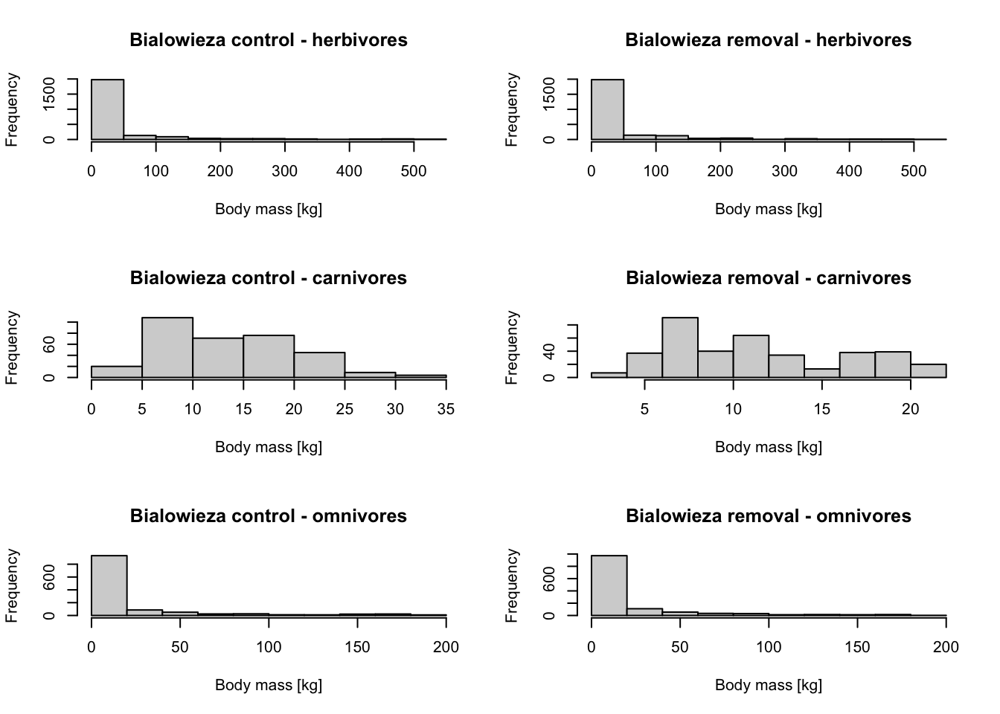
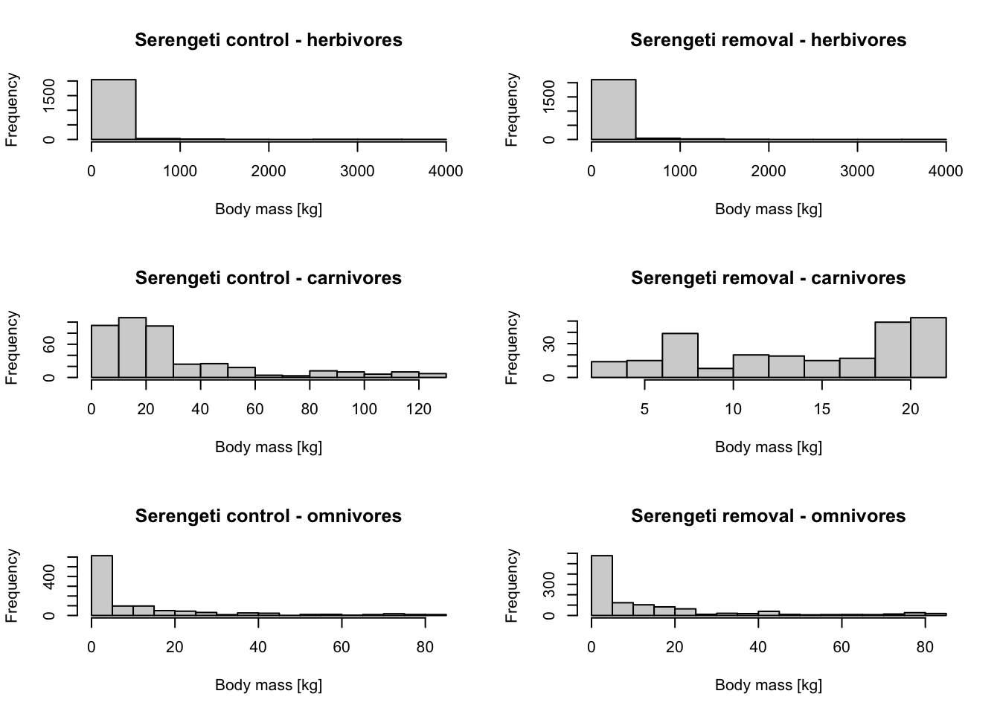

MadingleyR: Role of large carnivores
RStudio project
Open the RStudio project that we created in the first session. I recommend to use this RStudio project for the entire course and within the RStudio project create separate R scripts for each session.
- Create a new empty R script by going to the tab “File”, select “New File” and then “R script”
- In the new R script, type
# Session 12: MadingleyR, role of large carnivoresand save the file in your folder “scripts” within your project folder, e.g. as “12_Mad_carnivores.R”
This practical illustrates how MadingleyR can be used to
study top-down and bottom-up regulation of biomass across functional
groups. As example, we re-implement parts of the large carnivore-removal
case study described in (Hoeks et al.
2020). The workflow follows the example case study on
herbivore-removal provided on https://github.com/MadingleyR/MadingleyR.
1 Large-carnivore removal scenario
Large terrestrial herbivores and carnivores are particularly vulnerable to extinction (Dirzo et al. 2014) while also being of vital importance for ecosystem structure and functioning (Svenning et al. 2016). Hoeks et al. (2020) used Madingley to investigate the importance of large carnivores for ecosystem structure and dynamics. They hypothesised that herbivores should increase in biomass when large predators are lost as the top-down regulation weakens and the bottom-up (resource) regulation strengthens.
To understand the effect of large canrivore removal on ecosystem structure and, thus, the importance of top-down control on the ecosystem, @Hoeks et al. (2020) ran a simulation in which they remove all large (>21 kg) endothermic carnivores and compared this to a control, no-removal simulation. Here, we will not simulate global biomass differences, but just run the model for two 5x5° locations from Hoeks et al. (2020), Białowieża (Poland) and Serengeti (Kenya and Tanzania).
1.1 Setting up directory
We set up a directory to store all modelling results. Use your file explorer on your machine, navigate to the “models” folder within your project, and create a sub-folder for the current practical called “Mad_carnivores”. Next, return to your RStudio project and store the path in a variable. This has to be the absolute path to the models folder.
dirpath = paste0(getwd(),"/models/Mad_carnivores")1.2 Initialise the model
First, we define the spatial windows for the two locations and initialise the model.
library(MadingleyR)
# Spatial window Bialowieza:
sptl_bialowieza = c(20, 25, 50, 54)
# Spatial window Serengeti:
sptl_serengeti = c(32, 36, -4, 0)
# Initialise models for the two locations
mdat_B = madingley_init(spatial_window = sptl_bialowieza)## Reading default input rasters from: /Library/Frameworks/R.framework/Versions/4.1/Resources/library/MadingleyR/spatial_input_rasters.............
## Processing: realm_classification, land_mask, hanpp, available_water_capacity
## Processing: Ecto_max, Endo_C_max, Endo_H_max, Endo_O_max
## Processing: terrestrial_net_primary_productivity_1-12
## Processing: near-surface_temperature_1-12
## Processing: precipitation_1-12
## Processing: ground_frost_frequency_1-12
## Processing: diurnal_temperature_range_1-12
## mdat_S = madingley_init(spatial_window = sptl_serengeti)## Reading default input rasters from: /Library/Frameworks/R.framework/Versions/4.1/Resources/library/MadingleyR/spatial_input_rasters.............
## Processing: realm_classification, land_mask, hanpp, available_water_capacity
## Processing: Ecto_max, Endo_C_max, Endo_H_max, Endo_O_max
## Processing: terrestrial_net_primary_productivity_1-12
## Processing: near-surface_temperature_1-12
## Processing: precipitation_1-12
## Processing: ground_frost_frequency_1-12
## Processing: diurnal_temperature_range_1-12
## 1.3 Run spin-up simulations and control scenario
We first let the model spin up for 50 years. Remember that this
spinup phase should typically cover 100-1000 years; we shorten this for
computational reasons in this demonstration. On my computer, this
simulation runs through in 3-4 min (i.e. 0.20-0.25 sec per monthly
timestep). Should it take much longer on your computer, you can reduce
computational burden e.g. by reducing the maximum number of cohorts that
are being simulated (in the madingley_run() function).
In contrast to Hoeks et al. (2020), we only run a single replicate per scenario.
# Run spin-up of 50 years for Bialowieza and for Serengeti
mres_spinup_B = madingley_run(madingley_data = mdat_B,
years = 50,
out_dir=dirpath)
mres_spinup_S = madingley_run(madingley_data = mdat_S,
years = 50,
out_dir=dirpath)Save all model objects for later usage (such that you do not need to rerun the models for plotting).
# save model objects
save(mres_spinup_B, mres_spinup_S, file=paste0(dirpath,'/mres_carnivores.RData'))For the control scenario, we simply continue the simulations for another 50 years. To do so, we use the output of the spin-up simulation as input data for this new simulation. We simulate separately 49+1 years such that we have a nice 1-year output for plotting seasonal dynamics later on.
If your machine runs very slow, simplify the example to just one location.
# Run control scenario for 49+1 years.
# Note that simulations start from spinup results:
mres_control_B = madingley_run(madingley_data = mres_spinup_B,
years = 50,
out_dir=dirpath)
mres_control_S = madingley_run(madingley_data = mres_spinup_S,
years = 50,
out_dir=dirpath)# save model objects
save(mres_spinup_B, mres_spinup_S, mres_control_B, mres_control_S, file=paste0(dirpath,'/mres_carnivores.RData'))1.4 Run large predator removal scenario
Hoeks et al. (2020) simulated a gradual removal of large carnivores, starting with the largest predators and ending with predators with body mass of 21 kg. They argued that a gradual removal reduced the shock to the system and thus the chance of stochastic extinctions. Consequently, they removed only a small proportion of the largest predators in each time step of a 20-year period, with equal proportions of biomass removed each year. For simplicity, we remove all large endothermic carnivores >21 kg at once.
The endothermic carnivores have the functional group index of 1
(check out mdat_B$cohort_def; the count starts at
0).
# Inspect adult body mass of endothermic carnivores in Bialowieza
summary(subset(mres_spinup_B$cohorts, FunctionalGroupIndex==1)$AdultMass)## Min. 1st Qu. Median Mean 3rd Qu. Max.
## 5000 11412 17847 19698 25016 60322# Inspect adult body mass of endothermic carnivores in Serengeti
summary(subset(mres_spinup_S$cohorts, FunctionalGroupIndex==1)$AdultMass)## Min. 1st Qu. Median Mean 3rd Qu. Max.
## 4421 12513 21059 29663 36223 193694# Define new output
mres_removal_B = mres_spinup_B
mres_removal_S = mres_spinup_S
# Remove large carnivores in Bialowieza
remove_idx_B = which(mres_removal_B$cohorts$AdultMass > 21000 &
mres_removal_B$cohorts$FunctionalGroupIndex == 1)
mres_removal_B$cohorts = mres_removal_B$cohorts[-remove_idx_B, ]
# Remove large carnivores in Serengeti
remove_idx_S = which(mres_removal_S$cohorts$AdultMass > 21000 &
mres_removal_S$cohorts$FunctionalGroupIndex == 1)
mres_removal_S$cohorts = mres_removal_S$cohorts[-remove_idx_S, ]
# Define maximum body size of endotherm carnivores in spatial input layers:
sptl_inp = madingley_inputs('spatial inputs')
sptl_inp$Endo_C_max[ ] = 21000
# Run simulation:
# Bialowieza
mres_removal_B = madingley_run(madingley_data = mres_removal_B,
spatial_inputs = sptl_inp,
years = 50,
out_dir=dirpath)
# Serengeti
mres_removal_S = madingley_run(madingley_data = mres_removal_S,
spatial_inputs = sptl_inp,
years = 50,
out_dir=dirpath)# save model objects
save(mres_spinup_B, mres_spinup_S, mres_control_B, mres_control_S, mres_removal_B, mres_removal_S, file=paste0(dirpath,'/mres_carnivores.RData'))1.5 Compare scenarios
First, we plot the relative changes in density over time between the removal and the control scenario. Values below 1 mean that lower density in the removal scenario, values above 1 indicate higher density in the removal compared to the control scenario.
par(mfrow=c(2,2))
# Plot time series for Carnivores
dens_change_carn_B <- mres_removal_B$time_line_cohorts$Biomass_FG_1 / mres_control_B$time_line_cohorts$Biomass_FG_1
dens_change_carn_S <- mres_removal_S$time_line_cohorts$Biomass_FG_1 / mres_control_S$time_line_cohorts$Biomass_FG_1
plot(dens_change_carn_B,type='l', col="cyan4",lwd=2, xlab='Months', ylab='Change in density',ylim=c(0,2), main ='Carnivores')
abline(1,0, lty='dotted', col='grey')
lines(dens_change_carn_S,col='khaki',lwd=2)
legend('bottom',ncol=2,col=c('cyan4','khaki'),lwd=2,legend=c('Bialowieza','Serengeti'), bty='n')
# Plot time series for Herbivores
dens_change_herb_B <- mres_removal_B$time_line_cohorts$Biomass_FG_0 / mres_control_B$time_line_cohorts$Biomass_FG_0
dens_change_herb_S <- mres_removal_S$time_line_cohorts$Biomass_FG_0 / mres_control_S$time_line_cohorts$Biomass_FG_0
plot(dens_change_herb_B,type='l', col="cyan4",lwd=2, xlab='Months', ylab='Change in density',ylim=c(0.5,5), main='Herbivores')
abline(1,0, lty='dotted', col='grey')
lines(dens_change_herb_S,col='khaki',lwd=2)
# Plot time series for Omnivores
dens_change_omn_B <- mres_removal_B$time_line_cohorts$Biomass_FG_2 / mres_control_B$time_line_cohorts$Biomass_FG_2
dens_change_omn_S <- mres_removal_S$time_line_cohorts$Biomass_FG_2 / mres_control_S$time_line_cohorts$Biomass_FG_2
plot(dens_change_omn_B,type='l', col="cyan4",lwd=2, xlab='Months', ylab='Change in density',ylim=c(0.5,3), main='Omnivores')
abline(1,0, lty='dotted', col='grey')
lines(dens_change_omn_S,col='khaki',lwd=2)
# Plot time series for Autotrophs
dens_change_aut_B <- mres_removal_B$time_line_stocks$TotalStockBiomass / mres_control_B$time_line_stocks$TotalStockBiomass
dens_change_aut_S <- mres_removal_S$time_line_stocks$TotalStockBiomass / mres_control_S$time_line_stocks$TotalStockBiomass
plot(dens_change_aut_B,type='l', col="cyan4",lwd=2, xlab='Months', ylab='Change in density',ylim=c(0,1.5), main='Autotrophs')
abline(1,0, lty='dotted', col='grey')
lines(dens_change_aut_S,col='khaki',lwd=2)Let’s also compare the resulting food webs.
# Plot foodweb plot
plot_foodweb(mres_control_B, max_flows = 5)## loading inputs from: /Users/zurell/data/Lehre/UP_Lehre/CLEWS/EcosystemDynamics/edb-course/models/Mad_carnivores/madingley_outs_27_05_22_17_56_54/title('Bialowieza - control scenario')plot_foodweb(mres_removal_B, max_flows = 5)## loading inputs from: /Users/zurell/data/Lehre/UP_Lehre/CLEWS/EcosystemDynamics/edb-course/models/Mad_carnivores/madingley_outs_27_05_22_18_04_04/title('Bialowieza - removal scenario')plot_foodweb(mres_control_S, max_flows = 5)## loading inputs from: /Users/zurell/data/Lehre/UP_Lehre/CLEWS/EcosystemDynamics/edb-course/models/Mad_carnivores/madingley_outs_27_05_22_18_00_27/title('Serengeti - control scenario')
plot_foodweb(mres_removal_S, max_flows = 5)## loading inputs from: /Users/zurell/data/Lehre/UP_Lehre/CLEWS/EcosystemDynamics/edb-course/models/Mad_carnivores/madingley_outs_27_05_22_18_07_02/title('Serengeti - removal scenario')# Plot trophic pyramid
plot_trophicpyramid(mres_control_B)## loading inputs from: /Users/zurell/data/Lehre/UP_Lehre/CLEWS/EcosystemDynamics/edb-course/models/Mad_carnivores/madingley_outs_27_05_22_17_56_54/title('Bialowieza - control scenario')
plot_trophicpyramid(mres_removal_B)## loading inputs from: /Users/zurell/data/Lehre/UP_Lehre/CLEWS/EcosystemDynamics/edb-course/models/Mad_carnivores/madingley_outs_27_05_22_18_04_04/title('Bialowieza - removal scenario')
plot_trophicpyramid(mres_control_S)## loading inputs from: /Users/zurell/data/Lehre/UP_Lehre/CLEWS/EcosystemDynamics/edb-course/models/Mad_carnivores/madingley_outs_27_05_22_18_00_27/title('Serengeti - control scenario')
plot_trophicpyramid(mres_removal_S)## loading inputs from: /Users/zurell/data/Lehre/UP_Lehre/CLEWS/EcosystemDynamics/edb-course/models/Mad_carnivores/madingley_outs_27_05_22_18_07_02/title('Serengeti - removal scenario')
Task: extend analyses
Now, it’s your turn. Test other locations from Hoeks et al. (2020). Or implement several replicates and compare results.